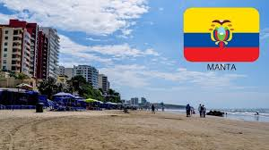
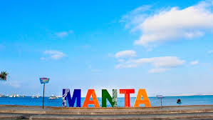

Después de ver el video, comprendí que Manta es una ciudad llena de vida, ubicada en la provincia de Manabí.
Destaca por su belleza natural, especialmente sus playas que son muy visitadas por turistas.
En el video se mencionó lugares muy conocidos, ya que desde allí se exportan productos del mar.
También aprendí que su gastronomía es muy variada y deliciosa, con platos típicos como el ceviche y el encebollado.
La ciudad tiene un clima cálido y agradable. Manta no solo es turística, sino también comercial y cultural.
Todo esto hace que sea un lugar muy atractivo para visitar y conocer.
SOBRE MANTA....
- Playas populares
- Lugares turisticos
- Gastronomía variada
- Costumbres
- La importancia
- Su cultura
- Su gente
- Lo que no sabias
- y mas.....
